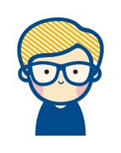

您好，我叫趙怡欣，半路轉職者，從事過一年設計相關工作。去過紐西蘭及澳洲打工度假，回台後覺得設計工作薪水有限，因此2020年開始在網路上自學，也幸運的找到目前這份前端工作。
主要負責內容是 UI 設計及切版，雖然已經靠自學半腳踏在前端裡，但總覺得要再跨一步獲得 “工程師”
這樣職稱還有一段距離，覺得自己只是網頁設計師，並不滿足目前工作現況，認知自己在這個領域中仍有很大的成長空間，目標是成為全端工程師。
希望這次培訓計畫能幫助我實現這個目標。
Ｑ
：為了成為軟體工程師，曾做過什麼努力？若有具體專案作品請分享給我們。
2020年決定要轉職後，購買了各種不同的線上課程，從最一開始在hahow上的吳哲宇老師的《動畫互動網頁程式入門 HTML/CSS/JS 》、 Udemy 上的 JavaScript
課程，最後到Huli的線上課程，自學近一年時間，從無到有，也練就出解決問題的能力。
▪ 第一個接到的案子
潔衣家，負責 RWD 切版
目前在職中，上班時間為 9:30~6:30，因此學習時間會設定晚上八點後及六日全天。
簡介中有提到禮拜一的固定開會時間，這部分因為公司是允許戴耳機的，所以可以當podcast聽，公司請假方面也很彈性，若真有必要時可以請特休參與，預計每週上課可投入時間大於30小時。
而之前自學經驗也是我的優勢，雖然無法全職投入，但藉由課程，可以把那些還沒完全釐清的觀念，再次複習並真正內化成自己的知識。
Ｑ
：是否有想要加入的軟體公司？為什麼想加入該公司？
微碧愛普科技有限公司是一間在台中製作
POS、點餐系統的公司，會知道這間公司是因為，之前剛自學完開始要找工作時，在求職網注意到的，但因為公司在
104
上的必備技能要求是：需具備一年以上全職前端程式開發經驗（非切版職務），讓當時對 js
幾乎不熟的我卻步了。因此若有機會，會想挑戰看看。目前已經有預設好，我的專案想要寫POS系統，因此面試時或許能加分，另外重要一點，在充滿博弈的台中，覺得他開的薪水蠻不錯的，希望有機會能面試資深工程師相關工作。
Ｑ
：請描述一件讓你產生明顯負面情緒的事情，你如何處理該情緒？
個人得失心很重，例如：遊戲打不到寶物，或者被別人搶走時，會感到憤怒，並覺得非得到不可，但往往事與願違。後來也是哥哥跟我開導後，了解到自己個性。之後再遇到類似情況，也會有意識得給自己一個期限，若這時間無法達成，會先暫時離開，並跟自己對話，說服自己不是一定要得到，等心情平靜一點再玩。
Ｑ
：關於這份申請網頁，請分享一個你開發時的技術心得。
切版目前算得心應手，沒有問題。對我而言最難的在於回答這些問題，不善寫作又常常有錯字，因此還特別請朋友看幫忙確認有無錯字XD
其實還有個讓我想轉職的關鍵，是因為我哥。
去年他開了一間居酒屋，看他都把時間花在店裡，每天早出晚歸，我問他：這樣不累嗎？他說：累啊，但他不容許自己失敗。
轉職旅程這樣一路走來，我也還沒成為我心目中認可的工程師，因此就覺得自己不能再這樣廢了，而我也想，如果真的有幸能參與課程，我想做的專案是一套 POS
點餐系統，因為現在居酒屋裡的很難用，希望可以透過自己專長，送給家人一份量身定制的禮物。
